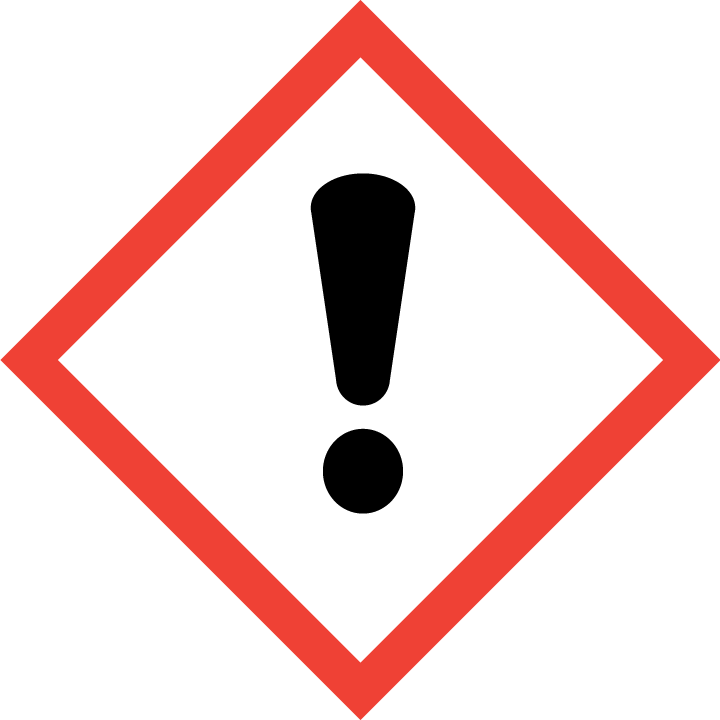

In Plan 2 hast du zwei Reaktionen mit Wasser kennengelernt: Chlorwasserstoff bildet mit Wasser Salzsäure, Ammoniak bildet mit Wasser Ammoniak-Lösung. Hier untersuchst du, welche Rolle das Wasser-Molekül dabei jeweils spielt.
Trocken oder feucht?

Chemikalien
- Zitronensäure (fest)

- Natron (Natriumhydrogencarbonat, fest)
- Destilliertes Wasser
Material
- 2 Uhrgläser
- 1 kleines Becherglas
- Spatel
- Pinzette
- Universalindikatorpapier
- Spritzflasche
Durchführung
Teil A: Indikatorpapier
- Gib eine Spatelspitze Zitronensäure auf ein Uhrglas. Lege ein trockenes Indikatorpapier mit der Pinzette auf die Kristalle und drücke es leicht an. Notiere die Farbe des Indikatorpapiers.
- Wiederhole Schritt 1 auf dem zweiten Uhrglas mit einem Indikatorpapier, das du vorher mit einem Tropfen Wasser angefeuchtet hast. Notiere die Farbe.
Teil B: Zitronensäure und Natron
- Mische im trockenen Becherglas je eine Spatelspitze Zitronensäure und Natron. Beobachte etwa eine Minute.
- Gib nun einige Milliliter Wasser dazu. Beobachte erneut.
Entsorgung
- Alle Reste können mit viel Wasser in den Ausguss gegeben werden.
- Indikatorpapier in den Restmüll.
Info: Wasser – mal Säure, mal Base
Nach Brønsted ist eine Säure ein Protonendonator und eine Base ein Protonenakzeptor. Ob ein Teilchen als Säure oder als Base reagiert, hängt vom Reaktionspartner ab. Das Wasser-Molekül zeigt das besonders deutlich.
Reaktion 1: Chlorwasserstoff und Wasser
HCl + H2O → H3O+ + Cl−Das Chlorwasserstoff-Molekül gibt ein Proton ab. Ein freies Elektronenpaar am Sauerstoff-Atom des Wasser-Moleküls bindet dieses Proton. Es entsteht ein Oxonium-Ion.
Reaktion 2: Ammoniak und Wasser
NH3 + H2O ⇌ NH4+ + OH−Jetzt gibt das Wasser-Molekül ein Proton ab. Das freie Elektronenpaar am Stickstoff-Atom des Ammoniak-Moleküls bindet es. Es entstehen ein Ammonium-Ion und ein Hydroxid-Ion.
Ampholyt: Teilchen, die je nach Reaktionspartner als Säure oder als Base reagieren können, nennt man Ampholyte (griech. amphoteros = beide).
Autoprotolyse
Auch Wasser-Moleküle untereinander tauschen Protonen aus. Das geschieht nur bei einem winzigen Bruchteil der Moleküle: Bei 25 °C ist es etwa eines von 550 Millionen.
H2O + H2O ⇌ H3O+ + OH−Aufgaben
- Führe den Versuch durch und notiere deine Beobachtungen in einer Tabelle (Teil A: trocken / feucht, Teil B: ohne / mit Wasser).
- Erkläre deine Beobachtungen. Begründe damit, warum du das Indikatorpapier in Auftrag 2 des Plans anfeuchten musstest.
Tipp
Welche Teilchen zeigt der Indikator eigentlich an? Wann entstehen diese Teilchen?
- Zeichne die Reaktionen 1 und 2 aus dem Infokasten mit Valenzstrichformeln. Markiere jeweils mit einem Pfeil, welches Proton von welchem Teilchen zu welchem freien Elektronenpaar wandert. Beschrifte Protonendonator und Protonenakzeptor.
- Erläutere mithilfe deiner Zeichnungen, warum man Wasser als Ampholyt bezeichnet.
- Reines Wasser leitet den elektrischen Strom nur sehr schwach, Ammoniak-Lösung deutlich besser (vgl. Auftrag 6 des Plans). Erkläre beide Befunde auf Teilchenebene.
Tipp
Strom wird in Lösungen von beweglichen Ionen geleitet. Woher kommen die Ionen im reinen Wasser, und wie viele sind es?
- Transfer: Im Magen trifft das Ammoniak von Helicobacter pylori auf Magensäure. Nenne das Teilchen der Magensäure, das mit dem Ammoniak reagiert, und formuliere die Reaktionsgleichung. Beschreibe, welche Rolle das Wasser bei der Entstehung dieses Teilchens gespielt hat.
- Zusatzaufgabe Bullrich-Salz gegen Sodbrennen enthält Hydrogencarbonat-Ionen (HCO3−). Prüfe, ob auch dieses Ion ein Ampholyt ist. Formuliere dazu eine Reaktion mit einem Oxonium-Ion und eine mit einem Hydroxid-Ion.